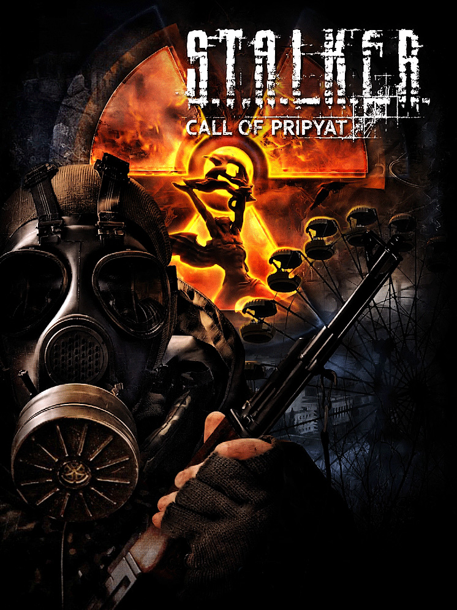

S.T.A.L.K.E.R.: Call of Pripyat
S.T.A.L.K.E.R.: Call of Pripyat
Details
|  | |
| Playtime | Not Played |
| Last Activity | Never |
| Added | 19/12/2024 18:34:03 |
| Modified | 18/05/2025 2:04:49 |
| Completion Status | Not Played |
| Library | Steam |
| Source | Steam |
| Platform | PC (Windows) |
| Release Date | 02/10/2009 |
| Community Score | 79 |
| Critic Score | 79 |
| User Score | |
| Genre | Role-playing (RPG) Shooter |
| Developer | GSC Game World |
| Publisher | bitComposer Games Deep Silver GSC World Publishing Viva Media Zoo Corporation |
| Feature | Multiplayer Single Player |
| Links | Official Steam Wikia Wikipedia GOG Twitch |
| Tag | Action Adventure Atmospheric Classic First-Person FPS Horror Immersive Moddable Multiplayer Open World Post-apocalyptic RPG Sandbox Sci-fi Shooter Singleplayer Survival Survival Horror Zombies |
Description
A military expedition to the center of the Zone has mysteriously disappeared. To figure out the reason and status of the personnel, is your task as Major Degtyarev, a Security Service of Ukraine operative in S.T.A.L.K.E.R.: Call of Pripyat.

The Exclusion Zone around the Chornobyl Nuclear Power Plant flames with anomalous activity stronger than ever before. Emissions of destructive energy flood it day by day, as its heartlands are finally free to explore for the most experienced and brazen ones. So set your path through swampy Zaton, industrial zones of the "Jupiter" plant, the ghost town of Pripyat, and the top secret catacombs in which no stalker's foot has set since the catastrophe.

The Zone becomes even more unpredictable and dangerous, distorting the fabric of reality with its energy. You'll have to seek shelter during abrupt emissions and show great ingenuity in order to deal with the new types of anomalies. Get ready to face Chimera – the most fierce predator of these lands at night and telepathic mutant Burer at the darkest abandoned places.

The lone stalker lifestyle is neat – but in Call of Pripyat, you've got a special objective. Along the journey, you'll meet plenty of vagabonds and dwellers. Be far-sighted and careful in your decisions: some of them can help in your investigation or shed some light on the mysteries of the Zone.

Game features:
UNCHARTED LANDS
The Exclusion Zone around the Chornobyl Nuclear Power Plant flames with anomalous activity stronger than ever before. Emissions of destructive energy flood it day by day, as its heartlands are finally free to explore for the most experienced and brazen ones. So set your path through swampy Zaton, industrial zones of the "Jupiter" plant, the ghost town of Pripyat, and the top secret catacombs in which no stalker's foot has set since the catastrophe.
NEW THREATS
The Zone becomes even more unpredictable and dangerous, distorting the fabric of reality with its energy. You'll have to seek shelter during abrupt emissions and show great ingenuity in order to deal with the new types of anomalies. Get ready to face Chimera – the most fierce predator of these lands at night and telepathic mutant Burer at the darkest abandoned places.
THE SEQUEL TO THE STORY
The lone stalker lifestyle is neat – but in Call of Pripyat, you've got a special objective. Along the journey, you'll meet plenty of vagabonds and dwellers. Be far-sighted and careful in your decisions: some of them can help in your investigation or shed some light on the mysteries of the Zone.
Game features:
- A combination of action, horror, survival, and role-playing elements in the setting of dark Eastern European science fiction.
- The unique atmosphere of loneliness in a dangerous place where time has stopped forever.
- Numerous endings that are formed by your decisions during the passage.
- Improved upgrade system for armours and weapons.
- A reworked A-Life life simulation system based on the best solutions of the previous parts.
- Expanded side quest system and many new unique characters.
- Random Emission mechanic that can now take you by surprise at any unexpected moment.
- New mutants: Chimera and Burer.
- Locations of Pripyat, recreated according to real prototypes.
- Four multiplayer modes with battles for up to 32 players on one map.